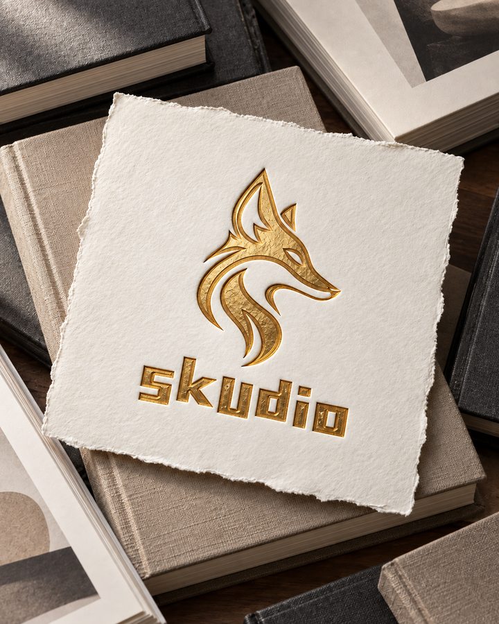
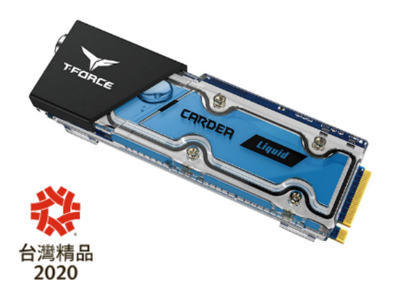
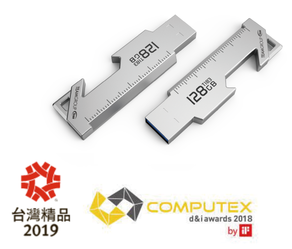
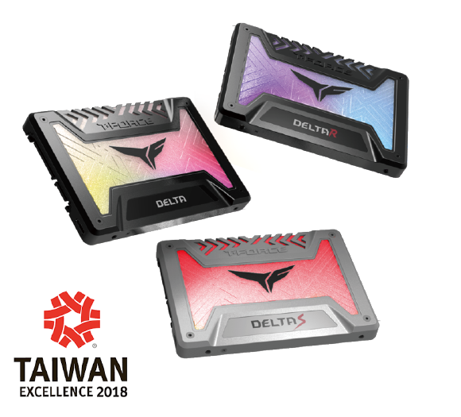

2020.04—PRESENT
工業設計工程師
鋐寶科技股份有限公司｜網通系統整合服務
工作從產品 CMF 與品牌識別，延伸到包材刀模、結構設計及 PLM／BOM 管理。配合 NPI 導入量產，與 PE 製造工程及 MAT 協作；也曾赴越南工廠，參與驗料、建廠、技轉、出勤與現場協調，讓圖面上的安排接上現場的需要。
Resume / Profile
從產品設計，到包材工程與量產現場
從外觀與 CMF，到包材結構與量產協作，關心一個想法如何成形，也願意走進細節，陪它走到製造現場。

Experience / 01
鋐寶科技股份有限公司｜網通系統整合服務
工作從產品 CMF 與品牌識別，延伸到包材刀模、結構設計及 PLM／BOM 管理。配合 NPI 導入量產，與 PE 製造工程及 MAT 協作；也曾赴越南工廠，參與驗料、建廠、技轉、出勤與現場協調，讓圖面上的安排接上現場的需要。
金科電子有限公司｜儲存媒體半成品電子產業
從產品與市場趨勢調查出發，發展電子產品的外觀造型；也透過影片剪輯與動態視覺，呈現產品的另一面。
十銓科技股份有限公司｜儲存媒體與電競周邊
參與 ID 設計、產品研究分析與提案，並將設計延伸至平面視覺、動畫、攝影、錄影及剪輯。參與設計的產品獲台灣精品與 COMPUTEX d&i awards 肯定，涵蓋儲存裝置與電競周邊。

2020 台灣精品

2019 台灣精品
2018 COMPUTEX d&i awards

2018 台灣精品
Tekspring｜消費性電子產品製造
在消費性電子產品的平面、網站與工業設計之間累積經驗，也在產品外觀與量產協作中，逐步建立自己的設計基礎。
福悅、行政院海岸巡防署
Capabilities / 02
從產品外觀與設計提案開始，透過 3D 建模、渲染與 Mockup 推敲形體，再以 CMF 定義、樣品確認與工程溝通逐步落實。
從包材刀模工程設計、產品商品化規劃與客戶提案，到 BOM/PLM 管理及 PE 製造工程溝通；將棧板貨櫃數量評估、ISTA 等級評估與 Cost Down 規劃，一併納入包裝的考量。
以品牌與公司 Logo 建立識別，延伸至印刷、技術文件、影像處理與版面，再透過 2D／3D 動態展示，讓產品與品牌被看見。
從日常工作裡反覆出現的需求出發，開發個人辦公室應用 HTML 工具，包括 SOP快速編輯器、CMF快速編輯器、合約文件掃描器與甘特圖專案規劃編輯器。透過 JSON 銜接工具資料與 RAG知識庫應用，作為整理與運用個人資料的橋樑。
未來將評估 webMCP 的應用，探索 Agent 與使用者透過網頁 App 整理個人資料庫、共同協作的方式。
Creo · SolidWorks · Rhino · KeyShot · AutoCAD · Illustrator · Photoshop · InDesign · After Effects · Excel VBA · Canva
About / 03
喜歡看一個想法慢慢有了輪廓，再經過材料、製程與一次次討論，成為手裡拿得到的產品。
一路走過消費性電子、儲存裝置與網通產品，工作也從外觀與 CMF，延伸到包材工程、BOM／PLM、供應商溝通與現場支援。近年開始把整理文件、查找資料的日常需求做成 AI 工具，希望少花一些時間在重複操作，多留一些心力給設計與思考。